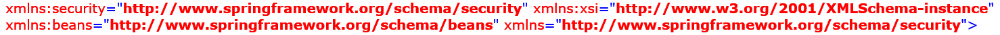

The
In addition to simplifying setup and management, the Manager also provides the following benefits:
Space leader election uses Apache Zookeeper instead of the LUS, providing a more robust process (consistent when network partitions occur), and eliminating split brain.
When using MemoryXtend, the last primary will automatically be stored in Apache Zookeeper (instead of having to set up a shared NFS and configure the Processing Unit to use it).
The GSM uses Apache Zookeeper for leader election (instead of the active-active topology used today). This provides a more robust process (consistent when network partitions occur). Also, having a single leader GSM means that the general behaviour is more deterministic and logs are easier to read.
REST API for managing the environment remotely from any platform.
The easiest way to get started is to run a standalone Manager on your machine - simply run the following command:
./gs-agent.sh --manager-localgs-agent.bat --manager-local./gs.sh host run-agent --autogs.bat host run-agent --autoIn the Manager log file (/logs), you can see:
The Manager has started the LUS, Zookeeper, GSM and REST API (and various other details about them).
Apache Zookeeper files reside in
The REST API is started on localhost:8090 .
The local Manager is intended for local use on the developer's machine, so it binds to localhost and is not accessible from other machines. If you want to start a Manager and access it from other hosts (remote access), follow the procedure described in High Availability below with a single host.
In a production environment, you'll probably want a cluster of Managers on multiple hosts to ensure high availability. You'll need 3 machines (an odd number is required to ensure a quorum during network partitions). For example, suppose you’ve selected machines alpha, bravo and charlie to host the managers:
Edit the export /
Copy the modified setenv-overrides.sh/bat to each machine that runs a
Run ./gs.sh[bat] host run-agent --auto on the manager machines (alpha, bravo, and charlie in this case).
Starting more than one Manager on the same host is not supported.
The following ports can be modified using system properties, e.g. via the setenv-overrides script located in
| Port | System Property | Default |
|---|---|---|
| REST | com.gs.manager.rest.port
|
8090 |
| Zookeeper | com.gs.manager.zookeeper.discovery.port
com.gs.manager.zookeeper.leader-election.port
com.gs.zookeeper.client.port
|
2888 3888 2181 |
| Lookup Service | com.gs.multicast.discoveryPort
|
4174 |
Apache Zookeeper requires that each Manager can reach the other Managers. If you change the Apache Zookeeper ports, make sure you use the same port on all machines. If that is not possible for some reason, you may specify the ports via the
When using this syntax in Unix/Linux systems, make sure to wrap it in quotes (as shown), because of the semi-colons.
Configuring manager servers includes LUS definitions. When you define GS_MANAGER_SERVERS, do not define GS_LOOKUP_LOCATORS.
Zookeeper client port can also be modified by declaring the environment variable GS_ZOOKEEPER_CLIENT_PORT and also through the Zookeeper config file located at config/zookeeper/zoo.cfg.
If defining more than one property, the order of priorities (highest to lowest) is -- java property, environment variable, config file.
When using the Admin API standalone client, you can configure the port using the Java system property or the environmental variable.
It is important to monitor the size of the HSQLDB database ({GS_HOME}/work/db/metricsdb.data), and change the data retention policy if necessary.
The HSQLDB port can be set as follows:-Dcom.gs.ui.metrics.db.port=9101 (default is 9101)-Dcom.gs.ui.query-timeout=700 -Dcom.gs.ui.metrics.db.host=DBHost (usually no need to change)-Dcom.gs.ui.metrics.db.name=metricsdb
The retention policy for this data can be configured as follows:
How long to keep data in the database:-Dcom.gs.ui.metrics.db.retention.retain-duration=PT10M (default is ten minutes)
How often to run the delete task:-Dcom.gs.ui.metrics.db.retention.delay-duration=PT1M (default is one minute)
How many rows to delete each time:-Dcom.gs.ui.metrics.db.retention.batch-size=20000 (default is 20,000)
Note that the number of rows to delete each time is a fixed value of 10,000.
If desired, HSQLDB usage can be disabled as follows:
-Dcom.gs.hsqldb.all-metrics-recording.enabled=false
-Dcom.gs.ops-ui.enabled=false
-Dcom.gs.newwebui.enabled=false
Apache ZooKeeper's behavior is governed by its configuration file (zoo.cfg).
When using com.gs.zookeeper.config-file system property to point to your custom configuration file.
The default Zookeeper port is 2181.
For more information about Apache Zookeeper configuration, see ZooKeeper configuration.
The ZooKeeper configuration file zoo.cfg is preset with the following parameters.
| Property | Description | Value |
|---|---|---|
| tickTime | Time unit used by ZooKeeper, in milliseconds. | 1000 |
| initLimit | Amount of time, in ticks, to allow followers to connect and sync to a leader. | 10 |
| syncLimit | Amount of time, in ticks, to allow followers to sync with ZooKeeper. | 10 |
| clientPort | The port to listen for client connections; the port that clients attempt to connect to. | 2181 |
| maxSessionTimeout | The maximum session timeout that the server will allow the client to negotiate, in milliseconds. | 60000 |
| autopurge | Automatic purging of the snapshots and corresponding transaction logs. | enabled by purgeInterval > 0 |
| autopurge.purgeInterval | The time interval for which the purge task has to be triggered (zero to disable), in hours. | 1 |
| autopurge.snapRetainCount | Retains the most recent snapshots and the corresponding transaction logs and deletes the rest. | 3 |
The Manager stack uses the ZooKeeper leader election to select a leader among the Grid Service Managers. The leader GSM will act as the managing (active) GSM of the deployed Processing Units. The ZooKeeper quorum ensures that there will only be one elected Manager. In the absence of a quorum, and until a GSM is elected leader, the GSMs will only monitor the cluster. As a participant of the ZooKeeper leader election, the GSM is configurable using the following properties:
| System Property | Default |
|---|---|
com.gs.manager.leader-election.zookeeper.connection-timeout
|
5000 |
com.gs.manager.leader-election.zookeeper.session-timeout
|
15000 |
com.gs.manager.leader-election.zookeeper.retry-timeout
|
Integer.MAX_VALUE |
com.gs.manager.leader-election.zookeeper.retry-interval
|
100 |
You can set up secured ZooKeeper as follows:
Create keystore and truststore (self-signed for testing purposes only):
keytool -genkeypair -alias mycert -keyalg RSA -keysize 2048 -dname "cn=localhost" -keypass keypassword -keystore keystore.jks -storepass keystorepassword
keytool -genkeypair -alias mycert -keyalg RSA -keysize 2048 -dname "cn=localhost" -keypass keypassword -keystore keystore.jks -storepass keystorepassword
keytool -exportcert -alias mycert -keystore keystore.jks -file thiscert.cer -rfc
Set up ZooKeeper configuration file zookeeper-server.cfg as follows:
secureClientPort=2181 clientPort=2181 dataDir=/path/to/datadir/ serverCnxnFactory=org.apache.zookeeper.server.NettyServerCnxnFactory ssl.keyStore.location=/path/to/files/keystore.jks ssl.keyStore.password=keystorepassword ssl.trustStore.location=/path/to/files/truststore.jks ssl.trustStore.password=truststirepassword
In setenv-overides.sh, add the following java options (replace with the relevant path):
-Dzookeeper.ssl.keyStore.password=keystorepassword -Dzookeeper.ssl.trustStore.location=/path/to/files/truststore.jks -Dzookeeper.ssl.trustStore.password=truststorepassword -Dcom.gs.zookeeper.client.config-file=/path/to/files/zookeeper-server.cfg -Dcom.gs.security.enabled=false -Dcom.gs.manager.rest.ssl.enabled=false -Dcom.gs.ui.metrics.db.files-defrag-threshold=10 -Xdebug -Xnoagent -Djava.compiler=NONE -Xrunjdwp:transport=dt_socket,server=y,suspend=n'
The Manager is offered side-by-side with the existing stack (GSM, LUS, etc.). We think this is a better way of working with
The Manager uses a different selection strategy when selecting resources where to deploy a Processing Unit instance. The strategy is to choose the container with the least relative weight. This is achieved by calculating the relative weight of each container in regards to other containers. Prior to 12.1, the strategy was to calculate the weight of a container based on gathering remote state. In large deployments, the network overhead and the overall deployment time is costly. We can achieve almost the same behavior with the new strategy.
You may experience a different instance distribution than before. Although in both strategies we take a "best-effort" approach, in some cases it may still be an uneven distribution due to simultaneous selection process.
To change between selector strategies, use the following system property (org.jini.rio.monitor.serviceResourceSelector). For example, to set the strategy to the on prior to 12.1, assign the following when loading the manager (in
-Dorg.jini.rio.monitor.serviceResourceSelector=org.jini.rio.monitor.WeightedSelector
Regarding the Spring Profile:
Two profiles have been added to the Ops Manager UI: gs-ops-manager-secured and gs-ops-manager (default). These profiles are defined in the war file $GS_HOME$/lib/platform/manager/webapps/V2.war. Inside the war file, the profiles are located in WEB-INF/spring/spring-security.xml, as follows:

If you are using a system property to set the active Spring profile, please take these profiles into consideration.
With an even number of managers, consistency cannot be assured in case of a network partition, hence the need for 3 Managers.
Theoretically this is possible (Apache Zookeeper supports this), but currently this is not supported in
Yes. However, make sure to use sticky sessions, as some of the operations (e.g. upload/deploy) take time to propagate to the other Managers.